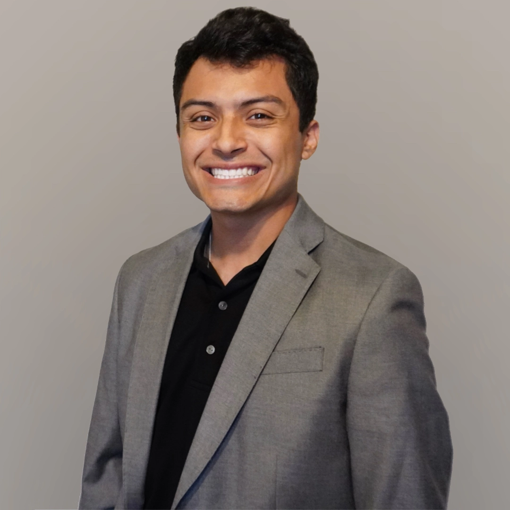

Video
production.
Camera. Edit. Broadcast.
I’m Luis Chavez, a Houston-based videographer and media production professional creating documentaries, branded content, podcasts, live broadcasts, social video and web design—from concept through final delivery.
Behind the scenes.
Documentary, branded, podcast and live-broadcast work made for real audiences.
{kind=link}
{kind=link}
{kind=link}
{kind=link}
{kind=link}
{kind=link}
{kind=link}

Luis A. ChavezVideographer · Media producer
Production from concept to delivery.
I manage the full lifecycle of video and digital content—from concept and filming through editing and distribution. My work spans product showcases, podcasts, training live streams, trade-show assets and organized digital libraries.
I earned a B.A. in Media Production from the University of Houston in 2024 and bring a practical, collaborative approach to every set and project.
Video productionCamera operations, editing, documentary and narrative
Live & podcastMulticamera directing, streaming and studio setup
ContentSocial strategy, publishing and graphic design
Digital systemsAsset management and brand consistency